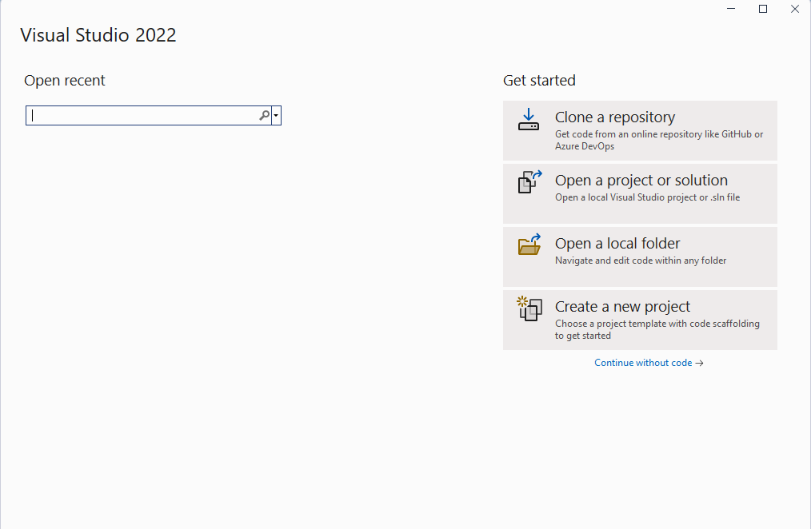
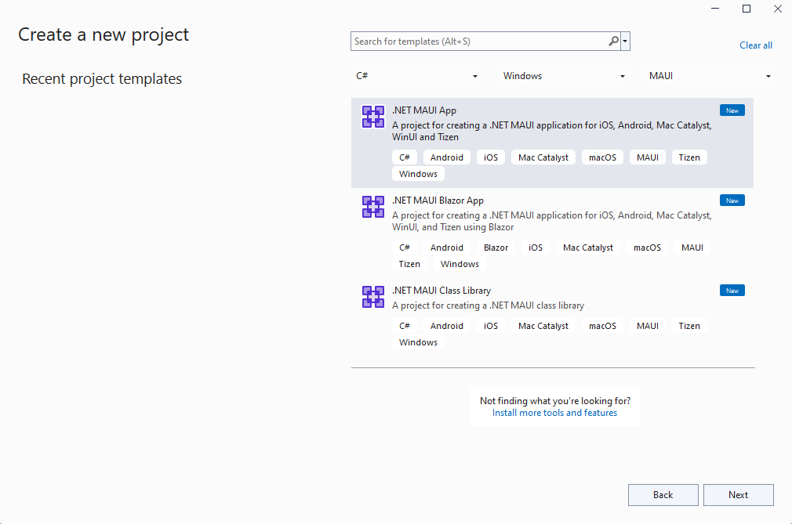
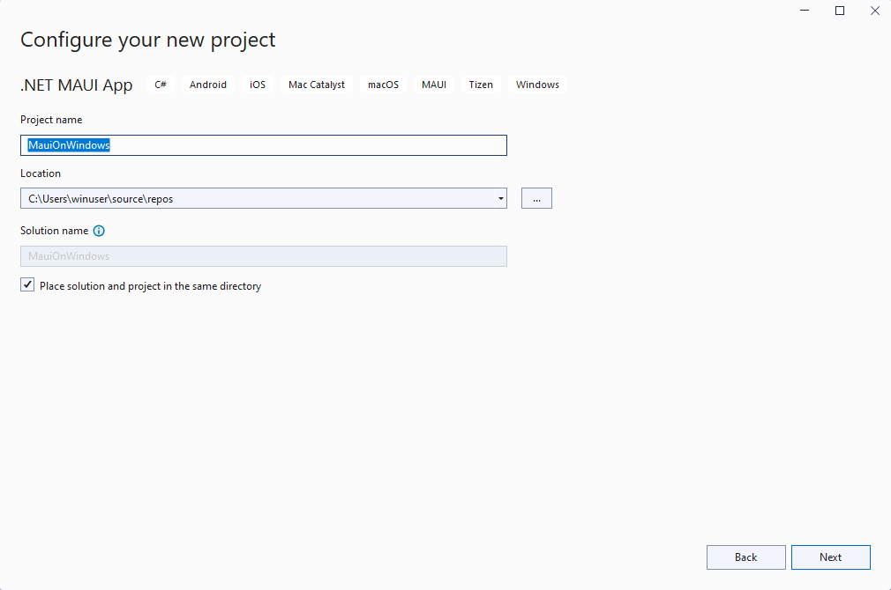
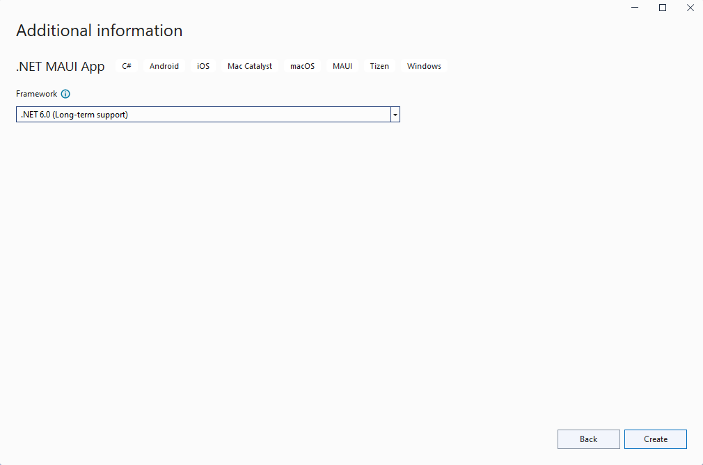
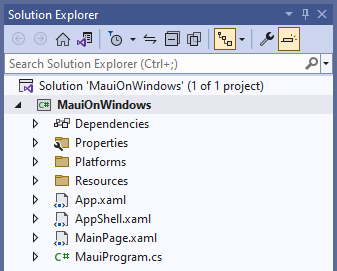
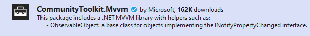
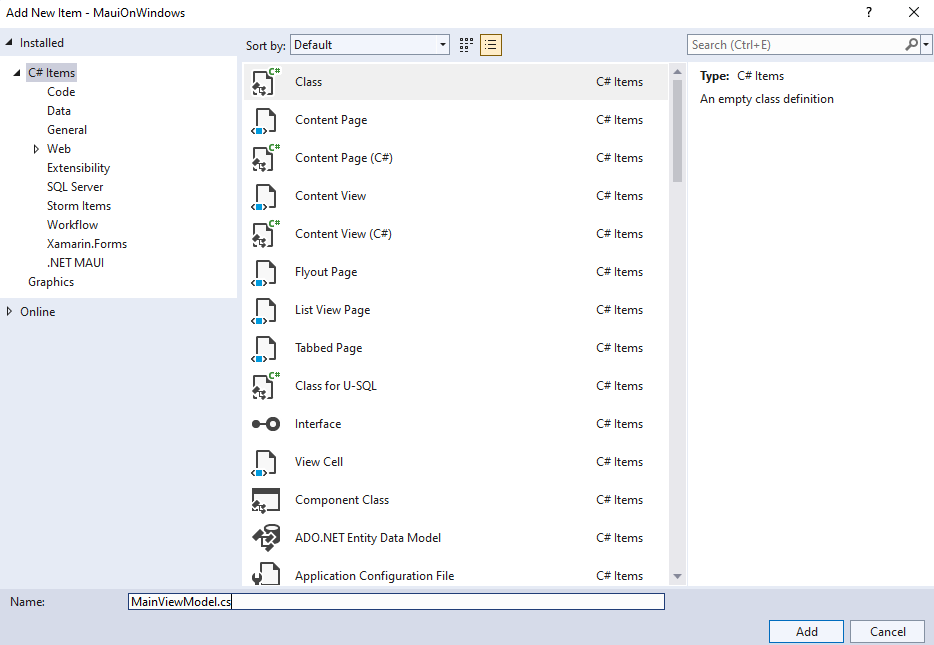
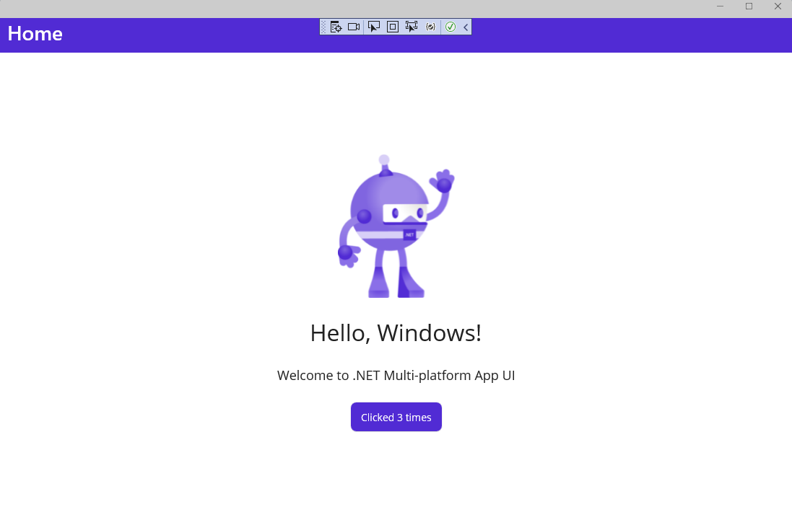

Build your first .NET MAUI app for Windows
Get hands-on with .NET MAUI by building your first cross-platform app on Windows.
Introduction
In this tutorial, you'll learn how to create and run your first .NET MAUI app for Windows in Visual Studio 2022 (17.3 or later). We will add some MVVM Toolkit features from the .NET Community Toolkit to improve the design the default project.
Setting up the environment
If you haven't already set up your environment for .NET MAUI development, please follow the steps to Get started with .NET MAUI on Windows.
Creating the .NET MAUI project
Launch Visual Studio, and in the start window click Create a new project to create a new project:

In the Create a new project window, select MAUI in the All project types drop-down, select the .NET MAUI App template, and click the Next button:

In the Configure your new project window, give your project a name, choose a location for it, and click the Next button:

In the Additional information window, click the Create button:

Wait for the project to be created, and for its dependencies to be restored:

In the Visual Studio toolbar, press the Windows Machine button to build and run the app.
In the running app, press the Click me button several times and observe that the count of the number of button clicks is incremented:
You just ran your first .NET MAUI app on Windows. In the next section, you'll learn how to add data binding and messaging features from the MVVM Toolkit to your app.
Troubleshooting
If your app fails to compile, review Troubleshooting known issues, which may have a solution to your problem.
Adding the MVVM Toolkit
Now that you have your first .NET MAUI app running on Windows, let's add some MVVM Toolkit features to the project to improve the app's design.
Right-click the project in Solution Explorer and select Manage NuGet Packages... from the context menu.
In the NuGet Package Manager window, select the Browse tab and search for CommunityToolkit.MVVM:

Add the latest stable version of the CommunityToolkit.MVVM package (version 8.0.0 or later) to the project by clicking Install.
Close the NuGet Package Manager window after the new package has finished installing.
Right-click the project again and select Add | Class from the context menu.
In the Add New Item window that appears, name the class
MainViewModeland click Add:
The
MainViewModelclass will be the data binding target for theMainPage. Update it to inherit fromObservableObjectin theCommunityToolkit.Mvvm.ComponentModelnamespace This will also require updating the class to bepublicandpartial.The
MainViewModelclass will contain the following code. TheCountChangedMessagerecord defines a message that is sent each time the Click me button is clicked, notifying the view of the change. The ObservableProperty and RelayCommand attributes added to themessageandIncrementCountermembers are source generators provided by the MVVM Toolkit to create the MVVM boilerplate code forINotifyPropertyChangedandIRelayCommandimplementations. TheIncrementCountermethod's implementation contains the logic fromOnCounterClickedin MainPage.xaml.cs, with a change to send a message with the new counter message. We will be removing that code-behind code later.using CommunityToolkit.Mvvm.ComponentModel; using CommunityToolkit.Mvvm.Input; using CommunityToolkit.Mvvm.Messaging; namespace MauiOnWindows { public sealed record CountChangedMessage(string Text); public partial class MainViewModel : ObservableObject { [ObservableProperty] private string message = "Click me"; private int count; [RelayCommand] private void IncrementCounter() { count++; // Pluralize the message if the count is greater than 1 message = count == 1 ? $"Clicked {count} time" : $"Clicked {count} times"; WeakReferenceMessenger.Default.Send(new CountChangedMessage(message)); } } }Note
You will need to update the namespace in the previous code to match the namespace in your project.
Open the MainPage.xaml.cs file for editing and remove the
OnCounterClickedmethod and thecountfield.Add the following code to the
MainPageconstructor after the call toInitializeComponent(). This code will receive the message sent byIncrementCounter()in theMainViewModeland will update theCounterBtn.Textproperty with the new message and announce the new text with theSemanticScreenReader:WeakReferenceMessenger.Default.Register<CountChangedMessage>(this, (r, m) => { CounterBtn.Text = m.Text; SemanticScreenReader.Announce(m.Text); });You will also need to add a
usingstatement to the class:using CommunityToolkit.Mvvm.Messaging;In
MainPage.xaml, add a namespace declaration to theContentPageso theMainViewModelclass can be found:xmlns:local="clr-namespace:MauiOnWindows"Add
MainViewModelas theBindingContextfor theContentPage:<ContentPage.BindingContext> <local:MainViewModel/> </ContentPage.BindingContext>Update the
ButtononMainPageto use aCommandinstead of handling theClickedevent. The command will bind to theIncrementCounterCommandpublic property that is generated by the MVVM Toolkit's source generators:<Button x:Name="CounterBtn" Text="Click me" SemanticProperties.Hint="Counts the number of times you click" Command="{Binding Path=IncrementCounterCommand}" HorizontalOptions="Center" />Run the project again and observe that the counter is still incremented when you click the button:
While the project is running, try updating the "Hello, World!" message in the first Label to read "Hello, Windows!" in MainPage.xaml. Save the file and notice that XAML Hot Reload updates the UI while the app is still running:

Next steps
Learn to build an app that displays Microsoft Graph data for a user by leveraging the Graph SDK in a .NET MAUI for Windows tutorial.